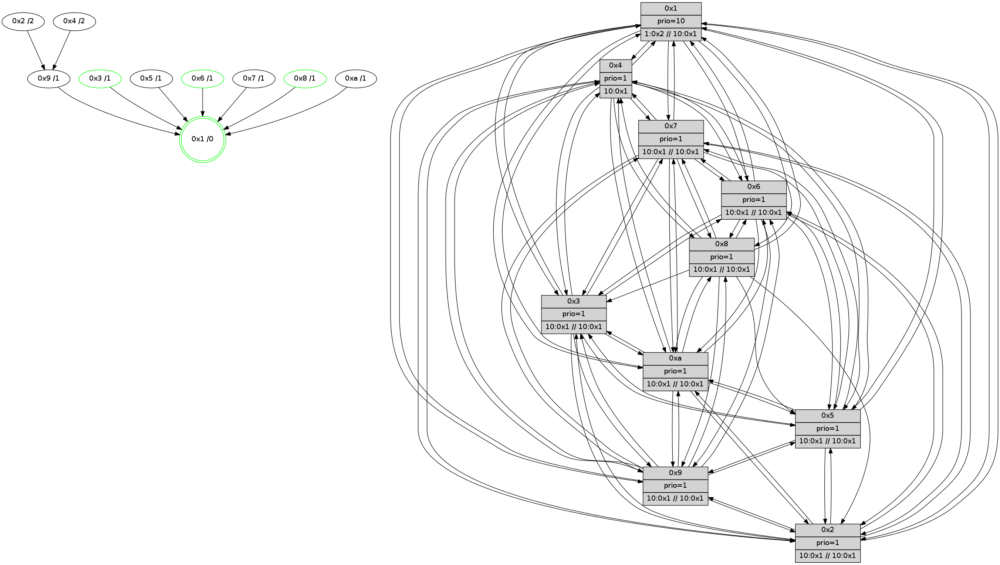

>> << IDX [start] -100 -25 -5 +0 +5 +25 +100 [525.323824167]
 Previous packets
----------------------------------------------------------------------
520.595039 beacon01(faad) #0 coord=01,02,03,04,05,06,07,0a,09,08 cycle=688.0ms assoc
-- color-indic=1 64 13 70
520.605020 beacon02(faad) #0 coord=01,02,03,04,05,06,07,0a,09,08 cycle=688.0ms assoc 64 80 41
520.615021 beacon03(faad) #0 coord=01,02,03,04,05,06,07,0a,09,08 cycle=688.0ms assoc 64 fa 0c
520.625021 beacon04(faad) #0 coord=01,02,03,04,05,06,07,0a,09,08 cycle=688.0ms assoc 64 8d e6
520.635022 beacon05(faad) #0 coord=01,02,03,04,05,06,07,0a,09,08 cycle=688.0ms assoc 64 f7 ab
520.645021 beacon06(faad) #0 coord=01,02,03,04,05,06,07,0a,09,08 cycle=688.0ms assoc 64 79 7c
520.655022 beacon07(faad) #0 coord=01,02,03,04,05,06,07,0a,09,08 cycle=688.0ms assoc 64 03 31
520.665026 beacon0a(faad) #0 coord=01,02,03,04,05,06,07,0a,09,08 cycle=688.0ms assoc 64 72 3a
520.675027 beacon09(faad) #0 coord=01,02,03,04,05,06,07,0a,09,08 cycle=688.0ms assoc 64 fc ed
520.685026 beacon08(faad) #0 coord=01,02,03,04,05,06,07,0a,09,08 cycle=688.0ms assoc 64 86 a0
520.696451 [Hello(7): seq=335 sym=2,3,5,4,8,9,10,1 sysInfo= stat=2:5,2,7,5/3:15,1,7,4/5:1,3,8,5/4:12,3,5,3/8:15,4,7,2/9:0,2,7,3/10:1,2,7,1/1:4,13,7,0]
520.699165 [STC(7)->2-.->1 #0.16 to-color d=4]
520.700638 [Color(8) seq=15 @0:0 prio=1 >10.@1,1.@2,1.@3,1.@4 >>10.@1,1.@2,1.@3]
520.702796 [STC(4)->2-.->1 #0.16 to-color d=4]
520.704608 [Color(3) seq=15 @0:0 prio=1 >10.@1,1.@2,1.@4,1.@5 >>10.@1,1.@2,1.@3]
520.709535 [Hello(6): seq=335 sym=2,3,5,4,7,9,8,10,1 sysInfo=coloring-mode-on,ColoringModeIndicationCalled stat=2:2,5,6,3/3:5,6,6,2/5:6,5,6,4/4:5,6,4,2/7:11,11,4,0/9:3,7,6,2/8:15,4,6,3/10:1,4,8,1/1:5,13,9,0]
520.713627 [TreeStatus(6)-.->1 #0.16 tree-change,stable child=1]
520.714816 [Hello(1): seq=244 sym=4,2,9,5,10,3,8,6,7 sysInfo=coloring-mode-on,ColoringModeRequestCalled stat=4:8,11,7,4/2:3,9,7,5/9:3,9,8,3/5:0,10,7,4/10:4,12,6,1/3:5,11,9,5/8:9,10,11,3/6:8,14,11,2/7:3,14,10,2]
520.719448 [Color(6) seq=15 @0:0 prio=1 >10.@1,1.@2,1.@3,1.@4 >>10.@1,1.@2,1.@3]
----------------------------------------------------------------------
521.383169 beacon01(faad) #0 coord=01,02,03,04,05,06,07,0a,09,08 cycle=688.0ms assoc
-- color-indic=1 64 af 75
521.393153 beacon02(faad) #0 coord=01,02,03,04,05,06,07,0a,09,08 cycle=688.0ms assoc 64 3c 44
521.403152 beacon03(faad) #0 coord=01,02,03,04,05,06,07,0a,09,08 cycle=688.0ms assoc 64 46 09
521.413151 beacon04(faad) #0 coord=01,02,03,04,05,06,07,0a,09,08 cycle=688.0ms assoc 64 31 e3
521.423151 beacon05(faad) #0 coord=01,02,03,04,05,06,07,0a,09,08 cycle=688.0ms assoc 64 4b ae
521.433151 beacon06(faad) #0 coord=01,02,03,04,05,06,07,0a,09,08 cycle=688.0ms assoc 64 c5 79
521.443153 beacon07(faad) #0 coord=01,02,03,04,05,06,07,0a,09,08 cycle=688.0ms assoc 64 bf 34
521.453156 beacon0a(faad) #0 coord=01,02,03,04,05,06,07,0a,09,08 cycle=688.0ms assoc 64 ce 3f
521.463158 beacon09(faad) #0 coord=01,02,03,04,05,06,07,0a,09,08 cycle=688.0ms assoc 64 40 e8
521.473158 beacon08(faad) #0 coord=01,02,03,04,05,06,07,0a,09,08 cycle=688.0ms assoc 64 3a a5
521.484372 [TreeStatus(7)-.->1 #0.16 tree-change child=1]
521.485524 [Hello(9): seq=279 sym=5,2,3,4,7,6,8,10,1 sysInfo= stat=5:2,5,3,4/2:14,8,4,2/3:6,11,3,2/4:7,7,3,2/7:5,12,8,1/6:13,8,6,3/8:3,7,2,0/10:14,4,3,1/1:6,7,9,0]
521.489297 [TreeStatus(9)-.->1 #0.16 tree-change child=1]
521.490491 [STC(1) #0.17 stable,to-color d=0]
521.492432 [Color(1) seq=16 @0:0 prio=10 >1.@2,1.@3,1.@4,1.@5 >>10.@1,1.@2,1.@3]
521.494964 [Hello(3): seq=336 sym=1,7,6,2,4,8,9,10,5 sysInfo=coloring-mode-on,ColoringModeIndicationCalled stat=1:7,12,11,0/7:9,13,6,2/6:0,10,6,3/2:15,6,3,4/4:4,8,3,2/8:7,8,7,1/9:8,5,7,2/10:2,3,1,0/5:5,5,6,3]
521.497595 [Hello(8): seq=279 sym=5,2,3,4,7,6,9,10,1 sysInfo=coloring-mode-on,ColoringModeIndicationCalled stat=5:4,5,5,3/2:13,7,4,3/3:12,8,5,4/4:2,8,4,2/7:3,10,7,2/6:8,12,8,3/9:4,6,6,2/10:15,5,2,1/1:5,12,11,0]
521.500187 [Hello(4): seq=336 sym=5,7,6,2,3,9,8,10,1 sysInfo= stat=5:9,5,6,4/7:1,12,7,1/6:5,10,6,3/2:2,8,4,3/3:0,8,5,3/9:6,4,1,0/8:3,5,8,2/10:3,6,4,1/1:10,11,12,0]
521.504972 [Hello(10): seq=268 sym=6,3,2,8,9,5,7,4,1 sysInfo= stat=6:7,12,6,2/3:15,8,6,3/2:7,7,3,4/8:14,8,7,2/9:8,6,5,2/5:2,5,5,3/7:2,13,6,1/4:0,9,3,3/1:0,12,10,0]
521.507399 [Hello(5): seq=336 sym=7,6,4,1,9,8,10,2 sysInfo= stat=7:0,12,7,1/6:3,11,7,2/4:15,9,3,1/1:12,9,10,0/9:15,6,5,1/8:15,9,6,0/10:9,7,3,1/2:15,7,3,2]
521.510948 [TreeStatus(10)-.->1 #0.16 tree-change child=1]
521.512340 [TreeStatus(5)-.->1 #0.16 tree-change child=1]
521.515096 [TreeStatus(4)-.->1 #0.16 tree-change child=1]
521.517538 [TreeStatus(3)-.->1 #0.16 tree-change,stable child=1]
521.525373 [Hello(2): seq=333 sym=4,5,7,6,3,9,10,1 sysInfo= stat=4:2,7,4,1/5:3,5,4,3/7:14,14,7,1/6:3,12,6,2/3:15,9,4,2/9:6,3,2,0/10:3,5,0,0/1:9,9,9,0]
521.529337 [TreeStatus(2)-.->1 #0.16 tree-change child=1]
----------------------------------------------------------------------
522.171299 beacon01(faad) #0 coord=01,02,03,04,05,06,07,0a,09,08 cycle=688.0ms assoc
-- color-indic=1 64 7b 40
522.181281 beacon02(faad) #0 coord=01,02,03,04,05,06,07,0a,09,08 cycle=688.0ms assoc 64 e8 71
522.191281 beacon03(faad) #0 coord=01,02,03,04,05,06,07,0a,09,08 cycle=688.0ms assoc 64 92 3c
522.201281 beacon04(faad) #0 coord=01,02,03,04,05,06,07,0a,09,08 cycle=688.0ms assoc 64 e5 d6
522.211281 beacon05(faad) #0 coord=01,02,03,04,05,06,07,0a,09,08 cycle=688.0ms assoc 64 9f 9b
522.221283 beacon06(faad) #0 coord=01,02,03,04,05,06,07,0a,09,08 cycle=688.0ms assoc 64 11 4c
522.231283 beacon07(faad) #0 coord=01,02,03,04,05,06,07,0a,09,08 cycle=688.0ms assoc 64 6b 01
522.241287 beacon0a(faad) #0 coord=01,02,03,04,05,06,07,0a,09,08 cycle=688.0ms assoc 64 1a 0a
522.251287 beacon09(faad) #0 coord=01,02,03,04,05,06,07,0a,09,08 cycle=688.0ms assoc 64 94 dd
522.261289 beacon08(faad) #0 coord=01,02,03,04,05,06,07,0a,09,08 cycle=688.0ms assoc 64 ee 90
522.272227 [Hello(1): seq=245 sym=4,2,9,5,10,3,8,6,7 sysInfo=coloring-mode-on,ColoringModeRequestCalled stat=4:9,11,7,5/2:4,9,7,6/9:4,9,8,3/5:0,10,7,5/10:5,12,6,2/3:6,11,9,6/8:10,10,11,3/6:8,15,11,2/7:3,14,10,3]
522.275783 [STC(9)->1 #0.17 tree-change,to-color d=1]
522.277008 [Hello(7): seq=336 sym=2,3,5,6,4,8,9,10,1 sysInfo= stat=2:6,2,7,6/3:0,2,7,5/5:1,3,8,6/6:0,1,0,1/4:13,3,6,4/8:0,5,7,2/9:1,2,7,4/10:2,2,7,2/1:5,14,8,0]
522.279991 [Color(8) seq=16 @0:0 prio=1 >10.@1,1.@2,1.@3,1.@4 >>10.@1,1.@2,1.@3]
522.282827 [STC(7)->1 #0.17 tree-change,to-color d=1]
522.285505 [Hello(6): seq=336 sym=2,3,5,4,7,9,8,10,1 sysInfo=coloring-mode-on,ColoringModeIndicationCalled stat=2:3,5,6,4/3:6,6,6,3/5:6,5,6,5/4:6,6,4,3/7:12,11,5,1/9:4,7,6,3/8:0,4,6,3/10:2,4,8,2/1:5,14,10,0]
522.288123 [TreeStatus(7)-.->1 #0.17 tree-change child=1]
522.289609 [Color(3) seq=16 @0:0 prio=1 >10.@1,1.@2,1.@4,1.@5 >>10.@1,1.@2,1.@3]
522.293147 [TreeStatus(6)-.->1 #0.17 tree-change,stable child=1]
522.294977 [Color(6) seq=16 @0:0 prio=1 >10.@1,1.@2,1.@3,1.@4 >>10.@1,1.@2,1.@3]
522.297887 [TreeStatus(9)-.->1 #0.17 tree-change child=1]
----------------------------------------------------------------------
522.959431 beacon01(faad) #0 coord=01,02,03,04,05,06,07,0a,09,08 cycle=688.0ms assoc
-- color-indic=1 64 c7 45
522.969414 beacon02(faad) #0 coord=01,02,03,04,05,06,07,0a,09,08 cycle=688.0ms assoc 64 54 74
522.979415 beacon03(faad) #0 coord=01,02,03,04,05,06,07,0a,09,08 cycle=688.0ms assoc 64 2e 39
522.989414 beacon04(faad) #0 coord=01,02,03,04,05,06,07,0a,09,08 cycle=688.0ms assoc 64 59 d3
522.999414 beacon05(faad) #0 coord=01,02,03,04,05,06,07,0a,09,08 cycle=688.0ms assoc 64 23 9e
523.009415 beacon06(faad) #0 coord=01,02,03,04,05,06,07,0a,09,08 cycle=688.0ms assoc 64 ad 49
523.019414 beacon07(faad) #0 coord=01,02,03,04,05,06,07,0a,09,08 cycle=688.0ms assoc 64 d7 04
523.029419 beacon0a(faad) #0 coord=01,02,03,04,05,06,07,0a,09,08 cycle=688.0ms assoc 64 a6 0f
523.039420 beacon09(faad) #0 coord=01,02,03,04,05,06,07,0a,09,08 cycle=688.0ms assoc 64 28 d8
523.049421 beacon08(faad) #0 coord=01,02,03,04,05,06,07,0a,09,08 cycle=688.0ms assoc 64 52 95
523.060937 [Hello(8): seq=280 sym=5,2,3,4,7,6,9,10,1 sysInfo=coloring-mode-on,ColoringModeIndicationCalled stat=5:4,5,5,4/2:14,7,4,4/3:12,8,5,5/4:3,8,4,3/7:3,10,8,3/6:9,13,9,4/9:4,6,6,3/10:0,5,2,2/1:6,12,11,0]
523.063750 [Hello(9): seq=280 sym=5,2,3,4,7,6,8,10,1 sysInfo= stat=5:2,5,3,5/2:15,8,4,3/3:7,11,3,3/4:8,7,3,3/7:6,12,8,1/6:13,8,6,3/8:4,7,2,0/10:15,4,3,2/1:6,8,10,0]
523.066170 [Hello(5): seq=337 sym=7,6,4,1,9,10,2 sysInfo= stat=7:1,12,8,2/6:4,12,8,3/4:15,9,3,2/1:13,9,10,0/9:15,6,6,2/10:9,7,3,1/2:0,7,3,3]
523.070096 [Color(1) seq=17 @0:0 prio=10 >1.@2,1.@3,1.@4,1.@5 >>10.@1,1.@2,1.@3]
523.072053 [Hello(10): seq=269 sym=6,3,2,8,9,5,7,4,1 sysInfo= stat=6:8,13,7,3/3:15,8,6,4/2:8,7,3,5/8:14,9,7,2/9:8,6,6,3/5:3,5,5,4/7:3,13,7,2/4:0,9,3,4/1:1,12,10,0]
523.074969 [Hello(2): seq=334 sym=4,5,7,6,3,9,10,1 sysInfo=hasWarning stat=4:2,7,4,1/5:3,5,4,3/7:15,14,8,2/6:4,13,7,3/3:15,9,4,2/9:6,3,3,1/10:3,5,0,0/1:10,9,9,0]
523.077399 [Hello(3): seq=337 sym=1,7,6,2,4,9,10,5 sysInfo=coloring-mode-on,ColoringModeIndicationCalled stat=1:8,12,11,0/7:9,13,6,2/6:0,11,6,4/2:0,6,3,5/4:4,8,3,2/9:8,5,7,3/10:2,3,1,0/5:5,5,6,3]
523.080415 [Hello(4): seq=337 sym=5,7,6,2,3,9,8,10,1 sysInfo= stat=5:9,5,6,4/7:2,12,8,2/6:6,11,7,4/2:3,8,4,4/3:0,8,5,4/9:6,4,2,1/8:3,6,8,2/10:3,6,4,1/1:11,11,12,0]
523.083569 [STC(4)->9-.->1 #0.17 tree-change,to-color d=2]
523.085285 [STC(2)->9-.->1 #0.17 tree-change,to-color d=2]
----------------------------------------------------------------------
523.747561 beacon01(faad) #0 coord=01,02,03,04,05,06,07,0a,09,08 cycle=688.0ms assoc
-- color-indic=1 64 03 4b
523.757545 beacon02(faad) #0 coord=01,02,03,04,05,06,07,0a,09,08 cycle=688.0ms assoc 64 90 7a
523.767543 beacon03(faad) #0 coord=01,02,03,04,05,06,07,0a,09,08 cycle=688.0ms assoc 64 ea 37
523.777543 beacon04(faad) #0 coord=01,02,03,04,05,06,07,0a,09,08 cycle=688.0ms assoc 64 9d dd
523.787544 beacon05(faad) #0 coord=01,02,03,04,05,06,07,0a,09,08 cycle=688.0ms assoc 64 e7 90
523.797544 beacon06(faad) #0 coord=01,02,03,04,05,06,07,0a,09,08 cycle=688.0ms assoc 64 69 47
523.807544 beacon07(faad) #0 coord=01,02,03,04,05,06,07,0a,09,08 cycle=688.0ms assoc 64 13 0a
523.817550 beacon0a(faad) #0 coord=01,02,03,04,05,06,07,0a,09,08 cycle=688.0ms assoc 64 62 01
523.827550 beacon09(faad) #0 coord=01,02,03,04,05,06,07,0a,09,08 cycle=688.0ms assoc 64 ec d6
523.837549 beacon08(faad) #0 coord=01,02,03,04,05,06,07,0a,09,08 cycle=688.0ms assoc 64 96 9b
523.848811 [Hello(1): seq=246 sym=4,2,9,5,10,3,8,6,7 sysInfo=coloring-mode-on,ColoringModeRequestCalled stat=4:10,11,8,5/2:5,9,8,6/9:4,9,9,4/5:0,10,7,5/10:6,12,6,2/3:7,12,9,6/8:10,11,11,3/6:9,0,11,3/7:4,14,11,4]
523.852167 [Color(3) seq=17 @0:0 prio=1 >10.@1,1.@2,1.@4,1.@5 >>10.@1,1.@2,1.@3]
523.854212 [Hello(6): seq=337 sym=2,3,5,4,7,9,8,10,1 sysInfo=coloring-mode-on,ColoringModeIndicationCalled stat=2:4,5,7,4/3:7,6,6,3/5:6,5,6,5/4:7,6,5,3/7:12,11,5,1/9:5,7,7,4/8:1,4,6,3/10:3,4,8,2/1:6,15,10,0]
523.858897 [Hello(7): seq=337 sym=2,3,5,6,4,8,9,10,1 sysInfo= stat=2:7,2,8,6/3:1,2,7,5/5:1,3,8,6/6:0,2,1,2/4:14,3,7,4/8:1,5,7,2/9:2,2,7,5/10:3,2,7,2/1:6,15,8,0]
523.863586 [Color(8) seq=17 @0:0 prio=1 >10.@1,1.@2,1.@3,1.@4 >>10.@1,1.@2,1.@3]
523.868009 [Color(6) seq=17 @0:0 prio=1 >10.@1,1.@2,1.@3,1.@4 >>10.@1,1.@2,1.@3]
----------------------------------------------------------------------
524.535691 beacon01(faad) #0 coord=01,02,03,04,05,06,07,0a,09,08 cycle=688.0ms assoc
-- color-indic=1 64 bf 4e
524.545673 beacon02(faad) #0 coord=01,02,03,04,05,06,07,0a,09,08 cycle=688.0ms assoc 64 2c 7f
524.555673 beacon03(faad) #0 coord=01,02,03,04,05,06,07,0a,09,08 cycle=688.0ms assoc 64 56 32
524.565675 beacon04(faad) #0 coord=01,02,03,04,05,06,07,0a,09,08 cycle=688.0ms assoc 64 21 d8
524.575674 beacon05(faad) #0 coord=01,02,03,04,05,06,07,0a,09,08 cycle=688.0ms assoc 64 5b 95
524.585675 beacon06(faad) #0 coord=01,02,03,04,05,06,07,0a,09,08 cycle=688.0ms assoc 64 d5 42
524.595674 beacon07(faad) #0 coord=01,02,03,04,05,06,07,0a,09,08 cycle=688.0ms assoc 64 af 0f
524.605680 beacon0a(faad) #0 coord=01,02,03,04,05,06,07,0a,09,08 cycle=688.0ms assoc 64 de 04
524.615680 beacon09(faad) #0 coord=01,02,03,04,05,06,07,0a,09,08 cycle=688.0ms assoc 64 50 d3
524.625680 beacon08(faad) #0 coord=01,02,03,04,05,06,07,0a,09,08 cycle=688.0ms assoc 64 2a 9e
524.636862 [Hello(10): seq=270 sym=6,3,2,8,9,5,7,4,1 sysInfo= stat=6:9,14,7,3/3:0,9,6,4/2:9,7,4,5/8:14,10,7,2/9:8,6,6,3/5:3,5,5,4/7:4,13,7,2/4:1,9,4,4/1:2,12,10,0]
524.640224 [Hello(3): seq=338 sym=1,7,6,2,4,9,10,5 sysInfo=coloring-mode-on,ColoringModeIndicationCalled stat=1:9,12,11,0/7:10,13,6,2/6:1,12,6,4/2:0,6,4,5/4:5,8,4,2/9:8,5,7,3/10:2,3,1,0/5:5,5,6,3]
524.642862 [Hello(2): seq=335 sym=4,5,7,6,3,9,10,1 sysInfo=hasWarning stat=4:2,7,4,1/5:3,5,4,3/7:0,14,8,2/6:5,14,7,3/3:15,10,4,2/9:6,3,3,1/10:3,5,0,0/1:11,9,9,0]
524.645569 [Hello(4): seq=338 sym=5,7,6,2,3,9,8,10,1 sysInfo= stat=5:9,5,6,4/7:3,12,8,2/6:7,12,7,4/2:3,8,5,4/3:0,9,5,4/9:6,4,2,1/8:3,7,8,2/10:3,6,4,1/1:12,11,12,0]
524.649011 [Hello(8): seq=281 sym=5,2,3,4,7,6,9,10,1 sysInfo=coloring-mode-on,ColoringModeIndicationCalled stat=5:4,5,5,4/2:15,7,5,4/3:13,8,5,5/4:4,8,5,3/7:3,10,8,3/6:9,14,9,4/9:5,6,6,3/10:1,5,2,2/1:7,13,11,0]
524.651502 [Hello(5): seq=338 sym=7,6,4,3,1,9,10,2 sysInfo= stat=7:2,12,8,2/6:5,13,8,3/4:0,9,4,2/3:0,1,0,0/1:14,10,10,0/9:15,6,6,2/10:10,7,3,1/2:1,7,4,3]
524.654999 [Hello(9): seq=281 sym=5,2,3,4,7,6,8,10,1 sysInfo= stat=5:3,5,3,5/2:0,8,5,3/3:8,12,3,3/4:9,7,4,3/7:7,12,8,1/6:14,9,6,3/8:4,8,2,0/10:0,4,3,2/1:7,9,10,0]
524.658034 [Color(1) seq=18 @0:0 prio=10 >1.@2,1.@3,1.@4,1.@5 >>10.@1,1.@2,1.@3]